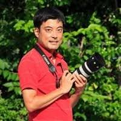
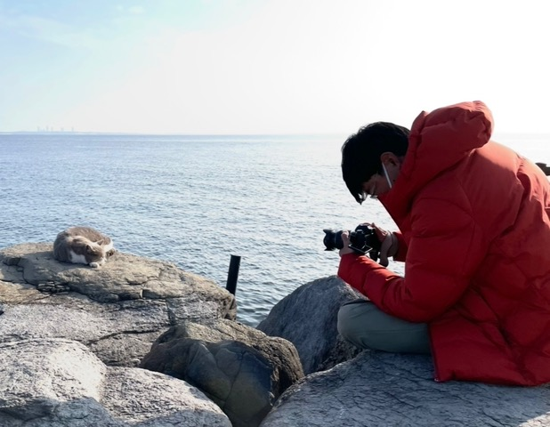

こもり まさたか
大阪芸術大学写真学科卒業後、同大学写真学科研究室にて副手として勤務。2001年より2012年まで印刷会社カメラマンとして活躍。2012年よりフリーの写真家としてのキャリアをスタート。
猫写真作家として活動中。ネコを撮影した、たくさんの写真集や著作を出版。自身の作品のほか、雑誌「ねこのきもち」や、カレンダー、郵便切手、テレビ番組等にネコの写真を数多く提供している。犬、猫を中心とした動物の豊かな表情やユーモアのある仕草を捉えるのを得意としている。
Stroll road in Europe
新風舎
ねころん
株式会社KATZ
にゃんことわざ
一迅社
366日のにゃん言葉
三才ブックス
神様・仏様・おねこ様
自費出版
「DOG」
大阪 難波にて開催
「MUSEUM」
東京 青山にて開催
「彩輝」
京都 八坂にて開催
日本広告写真家協会 APAアワード 入選
公募展 NEKOISM2014 今中賞 受賞

猫と同じ目線に立ち、その一瞬の表情や仕草をフレームに収める。撮影会では参加者に「動物の気持ちになって近づく」コツを丁寧に伝え、子供から大人まで写真の楽しさを発見してもらえる場を作っている。